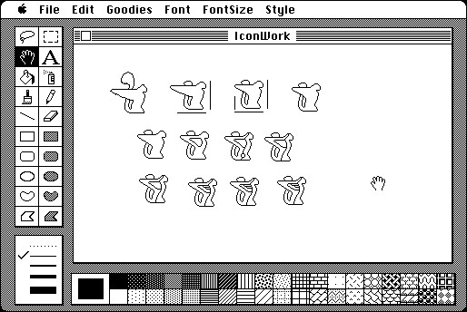

Download
macpaint-1.3-gry2.zip (119K) MacPaint 1.3 application and (modified) source code packaged into a zipped hfs disk image and checksum file. The disk image can be mounted with Mini vMac.
102658076_macpaint_acc.zip (66K) MacPaint 1.3 source code in the original format.
copyright: ©1984 Apple Inc.
mod date: Jul 22, 2014
license: made available only for non-commercial use
A "BitMap Painting Program by Bill Atkinson". MacPaint was one of the very first applications available for the Macintosh, written by the author of QuickDraw, the core Macintosh graphics library.

In 2010 the source code of MacPaint was donated by Apple to the Computer History Museum, for non-commercial use. The version here has been compiled from this source, after modifying the source to work in MPW Pascal. Also, the program version string and the about dialog have been added to, to note that this is a modified version.
If you find these downloads useful, please consider helping the Gryphel Project, which hosts them.
Here are the md5 checksums for the downloads, signed with Gryphel Key 5:
--------- GRY SIGNED TEXT --------- ba8fd01ae771d931a9c29b120db50b6f 102658076_macpaint_acc.zip e1d1ffde44cbc14f86d9034429befb55 macpaint-1.3-gry2.zip ------- BEGIN GRY SIGNATURE ------- Gry/4Xa8CFcUzxdN/C2NfDwBTtwaYisM0Gos8SpDoWExZKSGKjrE4KWlMfip8pZa hwilwcaqhLkxIszAZ62YKrWZCotmAwzEmgzicaareRMPT8/urU1mlUm1FWtqCKbX XNd0Qg1Tx2k2cbs33ZOJT/FAOar7psGtYWSrkgrgX96sf411S9jtXrr6OjbK5Yto -------- END GRY SIGNATURE --------
News:
July 24, 2014 - version 2 - fix incompatibility with HFS in clipboard operations.
July 22, 2014 - initial version.